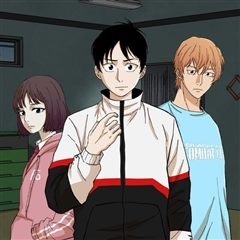
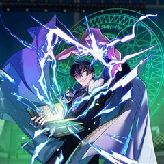
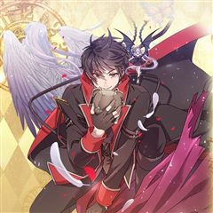
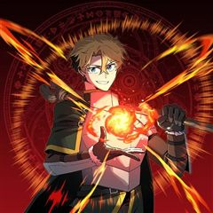
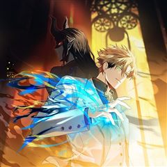
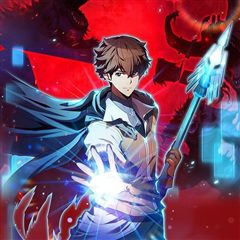
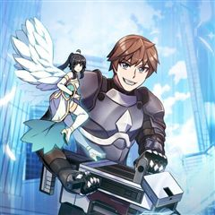

소설 속 엑스트라 같은 웹툰 추천

소설 속 엑스트라 · 캐롯스튜디오 / 지갑송
소설 속 엑스트라 재밌게 봤다면 이 웹툰들도 좋아할 거예요. 같은 장르이면서 학원물, 사이다, 성장물 같은 요소가 겹치는 작품을, 겹치는 요소가 많은 순서로 20개 골랐어요.
2026-10-03 기준 · 네이버웹툰·카카오웹툰·레진코믹스 · 성인 작품 제외
내 취향으로 직접 골라 추천받기 →-
1카카오웹툰
99대장
호랑이의 심장을 가지고 태어난 주인공 나선욱은 사고뭉치였으나 부모님의 소원으로 자신의 강함을 숨기고 오로지 졸업을 목표로 외진 곳에 위치한 조용할 줄 알았던 학교 “국양고등학교”로 전학을 가게 된다. 그러나 그곳은 다양한 꼰대 문화와 위험한 인물들이…
학원물사이다성장물판타지카카오웹툰에서 보기 → -
2

카카오웹툰방구석 여포
방구석에서만큼은 천하무쌍! 찐따고딩 여포의 숨겨진 능력이 깨어난다! 인터넷에서 '적토마18'로 활동 중인 고등학생 여포. 악명높은 키보드 워리어인 그는 '슈퍼베어'라는 유저와 키보드 배틀을 벌이다가 다니는 학교를 적는 실수를 하게 된다. 선망의 대상…
학원물사이다성장물판타지카카오웹툰에서 보기 → -
3카카오웹툰
나 혼자 EX급 소환수
교통사고로 의식을 잃은 지 3년, 눈 떠보니 게임 속 세상이 현실이 됐다. 시스템과 소환수가 당연해진 세상 속에서 사람들은 '시련의 탑'을 오르기 위해 '지누갓'을 찾아야 한다고 말한다. 그런데, 지누갓이라고...? 그건 나잖아.
학원물사이다성장물판타지카카오웹툰에서 보기 → -
4
 카카오웹툰
카카오웹툰암흑명가 천재 망나니가 되었다
세상이 멸망했다. 용사 일행이 되어 개고생한 결과가 결국 죽음이라니. 작은 소원이 있다면.... '다음 생, 부잣집 아들내미나 됐으면 좋겠다.' . . . ??????? 진짜 금수저 가문의 도련님이 되었잖아? 그런데 하필이면 마도 제국 암흑명가의 유…
학원물사이다성장물판타지카카오웹툰에서 보기 → -
5

카카오웹툰신화 속 대마법사의 재림
내가 AI 부적합자라 라고? 현대 마법 기술의 총아, 인공지능을 이식할 수 없는 부적합자. 도태된 천재 마법사 신하율. 마법사로서 사형 선고를 받은 그의 앞에 한 권의 책이 나타난다. '이 목소리를 들을 수 있는, 나와 똑같은 체질을 지닌 후인에게,…
학원물사이다성장물판타지카카오웹툰에서 보기 → -
6
 카카오웹툰
카카오웹툰탑랭커의 작가지망생활백서
인류 최강이자 레전더리 헌터인 ‘뇌제’ 태이현은 어느 날 모든 것을 뒤로 하고, 웹소설 작가가 되기로 결심한다. 그러나 평생 먼치킨으로만 살아온 이현의 소설에는 결정적으로 ‘리얼리티’가 부족하다는 문제가 지적되고, 그는 이 문제를 해결하기 위해 한…
학원물사이다성장물판타지카카오웹툰에서 보기 → -
7
 카카오웹툰
카카오웹툰바람의 마도사
'모든 것을 잃은 소년 바람의 마도사가 되다.' 정령과 마법이 공존하는 세계. 천재적인 마법 재능을 타고났으나 무인 가문의 아들이라는 숙명 아래 힘을 숨긴 채 자라온 소년 시몬 하이스. 어느 날 아버지 클라인은 자신의 욕심을 위해 시몬을 죽이려 들고…
학원물사이다성장물판타지카카오웹툰에서 보기 → -
8
 카카오웹툰
카카오웹툰가드패스
평소 먹는 것을 좋아해 뚱뚱하고 큰 체격을 가진 '임세준'. 그는 뚱보라는 놀림에도 신경 쓰지 않는 자존감이 높고 확고한 성격을 가졌다. 그에게 단 한 명의 친구 '서하진'. 그녀는 어릴 적부터 세준을 지켜주기 위해 늘 운동을 배워왔다. 어느 날 세…
학원물사이다판타지카카오웹툰에서 보기 → · 가드패스 같은 웹툰 → -
9
 카카오웹툰
카카오웹툰재앙급 영웅님이 귀환하셨다
지상에 최강의 영웅이 있었다. “하지만 죽었잖아. 우리가 죽인 놈이 어떻게 돌아와?” “그러게. 돌아올 수 있으면 한번 돌아와 보라지.” 그런데 20년 만에 진짜 돌아와 버렸다? “뭘 그리 놀래? 왜. 양심에 찔릴 짓이라도 하셨나?” 이 XX들. 가…
학원물사이다판타지카카오웹툰에서 보기 → · 재앙급 영웅님이 귀환하셨다 같은 웹툰 → -
10
 카카오웹툰
카카오웹툰템빨
[신영우 (유저 네임: 그리드)] 세계 최고의 가상 현실 게임 <SATISFY>. 현실에서나, 게임 속에서나, 불운은 항상 그의 곁을 맴도는데.... 퀘스트 수행 중 우연히 발견한 게임 속 로또, '파그마의 기서'. 20억 명이 넘는 유저 중 유일한…
학원물사이다판타지카카오웹툰에서 보기 → · 템빨 같은 웹툰 → -
11
 카카오웹툰
카카오웹툰묵향 다크레이디
마교의 교주로서 극강의 무공을 자랑하던 묵향은 적들(혈교)에 의해 생전 처음 보는 생소한 이세계(판타지 세계)로 떨어지게 된다. 그곳에서 엘프, 마법사, 기사, 드래곤 등 새로운 존재들과 만나며... 무림 최고수 묵향이 원래 자신의 세상(무림)으로…
학원물사이다판타지카카오웹툰에서 보기 → · 묵향 다크레이디 같은 웹툰 → -
12
 카카오웹툰
카카오웹툰얼어붙은 플레이어의 귀환
세상이 바뀌고 5년. 최종보스가 나타났다. [지구 에어리어의 최후의 보스, 서리여왕이 출현합니다.] 최후의 보스! 그녀만 처치하면 예전처럼 살 수 있다! 인류 최고의 플레이어, 어둑서니를 포함한 다섯 명의 플레이어가 마침내 서리여왕을 쓰러뜨리지만..…
학원물사이다판타지카카오웹툰에서 보기 → · 얼어붙은 플레이어의 귀환 같은 웹툰 → -
13
 카카오웹툰
카카오웹툰4000년 만에 귀환한 대마도사
웨스트로드 아카데미의 열등생, 블레이크 가문의 수치. 괴로운 삶을 이기지 못해 죽음을 선택한 프레이 블레이크의 몸에 새로운 영혼이 깃든다. “뭐야, 이 몸뚱이는? 하나부터 열까지 손 봐야겠군.” 대마도사 루카스 트로우맨. 열등생 프레이 블…
학원물사이다판타지카카오웹툰에서 보기 → -
14

카카오웹툰만렙 영웅님께서 귀환하신다!
힘없는 골방왕자 데이비, 혼수상태에서 영혼이 빠져나온 그가 도착한 곳은 영웅들의 혼이 모인 거대한 회랑. 천년동안 굴려진, 그가 만렙 영웅님이 되어 귀환하셨다! 기다려라, 모두 제대로 상대해주마! 데이비의 통쾌한 복수극과 왕궁생활기가 지금 시작됩니다!
학원물사이다판타지카카오웹툰에서 보기 → -
15

카카오웹툰나 홀로 버그로 꿀빠는 플레이어
과도한 업무와 밤샘 게임으로 돌연사?! 눈을 뜬 나를 반긴 것은 게임 <파라디소>의 세계관 속이었다. 그것도 초고도 비만의 몸뚱이와 몰락하기 일보직전의 완벽한 듣보잡 엑스트라 영주, 자레드의 몸으로 환생했다! 망할! 소설이나 영화 속 주인공들은 존잘…
학원물사이다판타지카카오웹툰에서 보기 → -
16
 카카오웹툰
카카오웹툰마존현세강림기
첫 번째 삶. 불의의 사고로 가족과 두 다리를 잃고 스스로 목숨을 끊었다. 두 번째 삶. 중원에서 적천마존이라는 명성을 얻었지만 가장 신뢰하던 이에게 배신당해 죽게 됐다. 그리고 맞게 된 세 번째 삶. 다시 돌아온 현대에서 강진호 자신은 평범한 삶을…
학원물사이다판타지카카오웹툰에서 보기 → -
17

카카오웹툰재능 삼킨 마법사
"어이, 메피. 여기 언령마법 풀이 좀 써주시죠?" 예상치 못한 사건으로 한 몸 살이를 하게 된 천재 마법사 엘릭 메르빙거와 원죄의 마왕 메피스토펠레스. 마법을 쓰지 못하는 체질이었던 엘릭은 마왕의 힘을 최대한 흡수해 마도 명문 메르빙거 가의 재건을…
학원물사이다판타지카카오웹툰에서 보기 → -
18

카카오웹툰테이밍 마스터
전 세계에서 가장 인지도 높은 VR(가상현실) 게임 ‘카일란’. 가상현실학과에서도 유명한 자타공인의 게임 폐인 이안. 서버에서 순위권에 드는 궁수로서 남부러울 것 없는 그가 우연히 획득하게 된 히든 클래스로의 전직을 위해 주위의 반대를 무릅쓰고 93…
학원물사이다판타지카카오웹툰에서 보기 → -
19

카카오웹툰나 빼고 다 귀환자
낙오, 낙오, 또 낙오. 태생적 외톨이, 낙오자의 삶에서 이번에는 신도 파악하지 못할 은신술로 전 인류에서 낙오하게 된다. “왜 나만 빠진 거예요? 왜 나만 이 꼴이 된 거죠?” [다른 세계로 가는 인류 명단을 작성하던 신께서 끝내 당신을 찾지 못했…
학원물사이다판타지카카오웹툰에서 보기 → -
20
 카카오웹툰
카카오웹툰회귀검가의 서자가 사는 법
강자존의 가문 라그나르의 서자 테오, 죽도록 노력했지만 재능이 부족하여 혈통의 사슬을 끊지 못하고 결국 왕좌경쟁에 밀려난다. 하지만 힘없는 서자 임에도 형제들은 테오를 제거하려 하였고 자신을 가르쳤던 스승에게 마저 배신당한 테오는 모든걸 잃어버리고…
학원물사이다판타지카카오웹툰에서 보기 →